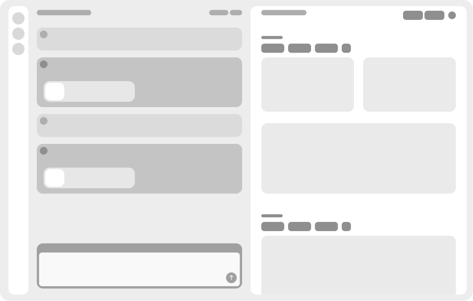
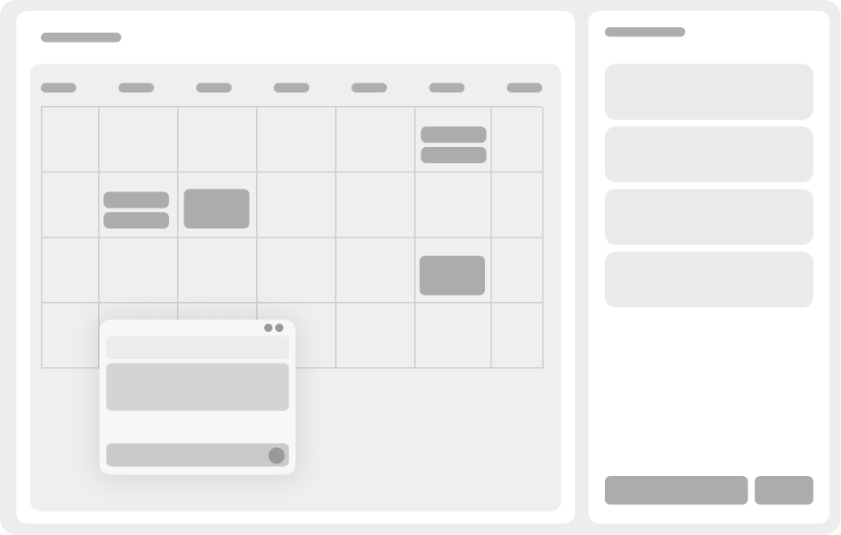

For years, UI design has been about structured layouts, buttons, forms, dashboards. But AI is changing how we interact with digital products. Instead of navigating menus and clicking through layers of UI, users can now just ask for what they need. Interfaces are becoming more conversational, adaptive, and AI-driven, shifting from static layouts to fluid, intent-based experiences.
Many of my recent projects reflect this shift. Clients are increasingly integrating AI, not just as an add-on, but as a core experience. This means rethinking design patterns:
From clicking to asking – Users describe what they need instead of searching for the right button.
From static to dynamic – Interfaces adapt in real-time based on user intent.
From dashboards to insights – AI surfaces the right data instead of making users dig for it.
Here are a few ways I've explored AI-first UX in real projects

One side for conversational input, the other for AI-generated results (e.g., reports, analytics, or design iterations).
Instead of predefined layouts, users build and modify dashboards using natural language: "Add a revenue graph for Q3" or "Compare this year's churn rate to last year."

AI helps structure plans dynamically: "Create a content schedule for next month" or "Prioritize tasks based on deadlines and workload."
A plugin that understands intent, suggests solutions, and explains complex code in simple terms, making programming more intuitive.
In my work, I’ve seen firsthand how AI is reshaping UI design, not just in how interfaces look, but in how they think. These projects challenged my understanding of UI and pushed me to rethink user experience in a new way. As AI continues to evolve, I’m excited to explore the possibilities it brings to design.